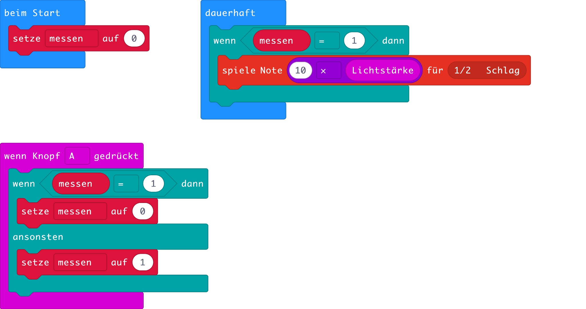

Der Klang des Lichtes
Wie klingt das Licht? Das erscheint als eine absurde Frage. Es gibt jedoch Menschen, die können Farben hören oder Töne schmecken. Man nennt dieses Phänomen Synästhesie, was so viel wie zugleich wahrnehmen bedeutet.
Abb. 1 – Synesthesia (Bild: Valentina Gaia Lops / flickr.com / Lizenz: CC-BY-SA 4.0)
Mit dem micro:bit können wir versuchen die synästhetische Wahrnehmung des Lichtes zu verstehen. Wir verwenden dazu den Helligkeitssensor. Normalerweise wird ein Helligkeitssensor gebraucht um ein Solarpanel nach der Sonne auszurichten, einen Roboter zur hellsten Stelle im Raum hinzusteuern oder die Helligkeit des Handybildschirms zu regulieren.
Wir lassen den micro:bit einen Ton spielen, der umso höher ist, je intensiver das Licht auf den Sensor trifft. Je nach Lichtstärke muss man den Wert des Helligkeitssensors, die Lichtstärke, noch mit einem Faktor multiplizieren, damit der micro:bit nicht nur brummt, sondern wirklich auch hohe Töne spielt.
Mit der Taste A soll man den Sensor ein- und ausschalten können. Ein mögliches Programm zeigt die Abb. 1.

Abb. 1 – Programm für den Helligkeitssensor
Aufgaben
- Finde mit Hilfe deines Programms heraus, wo auf dem Microbit der Helligkeitssensor sitzt.
- Programmiere den micro:bit so, dass er die Helligkeit nicht nur in einen Ton umsetzt, sondern zugleich auf dem Display ausgibt. Hinweis: Man kann verschiedene "Dauerhaft"-Zangenblöcke parallel laufen lassen.
- Programmiere den micro:bit so, dass er anstelle der Helligkeit die Temperatur in einen Ton umsetzt und auf dem Display anzeigt.
Autor: Dr. U. Leisinger, T. Jenni
Letzte Änderung: 14. Mai 2021

Einsteigerkurs für den BBC micro:bit von T. Jenni, et al. ist lizenziert unter einer Creative Commons Namensnennung - Nicht-kommerziell - Weitergabe unter gleichen Bedingungen 4.0 International Lizenz.